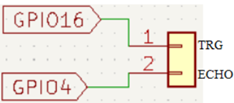

Objetivo. Realizar mediciones de distancia con un sensor ultrasónico HC-SR04 mediante una función parametrizable. Controlar el número de lecturas y los pines utilizados a través de parámetros de entrada.
Procedimiento.
-
Conectar el sensor HC-SR04 al ESP32:
- Trigger al pin digital (salida) GPIO16
- Echo al pin digital (entrada) GPIO4

- Abrir Thonny y crear un nuevo archivo .py.
- Definir la función distancia(TRIG, ECHO) para calcular la distancia usando la velocidad del sonido.
- Crear la función rutine_HCSR04(trig_pin, echo_pin) que inicializa pines y controla la cantidad de mediciones.
-
Llamar a la función con los pines especificados para iniciar el conteo de lecturas.
import machine import time # Calcula la distancia a un objeto con el sensor ultrasonico def distancia(TRIG,ECHO): # Asegura que inicialmente el trigger esta off TRIG.off() time.sleep_us(2) # Wait for 2 microseconds # Envía un pulso durante 10-microsecond al pin trigger TRIG.on() time.sleep_us(10) TRIG.off() # Espera para que el pin echo vaya a high while not ECHO.value(): pass # Registra el tiempo hasta cuando el pin echo va a high time1 = time.ticks_us() # Espera hasta cuando el pin echo va a low while ECHO.value(): pass # Registra el tiempo hasta cuando el pin echo va a low time2 = time.ticks_us() # Calcula la diferencia de tiempos entre los tiempos de los dos registros durante = time.ticks_diff(time2, time1) # Calcula y retorna la distance (en cm) usando la velocidad del sonido (340 m/s) return durante * 340 / 2 / 10000 def rutine_HCSR04(trig_pin,echo_pin): # Define los pines trigger y echo para el sensor de distancia TRIG_ = machine.Pin(trig_pin, machine.Pin.OUT) ECHO_ = machine.Pin(echo_pin, machine.Pin.IN) time1 = time.ticks_us() i = 0 while i <= 30: time2 = time.ticks_us() dis = distancia(TRIG_,ECHO_) i = i + 1 print(i,' Distancia: %.2f' % dis) time.sleep_ms(300) # Espera 300 milisegundos antes de volver a leer # Pines utilizados: GPIO16 para el trigger y GPIO4 para el ECHO rutine_HCSR04(16,4)
Actividades sugeridas.
- Cambiar el número máximo de lecturas modificando el valor de i <= 30.
- Mostrar las distancias en una pantalla LCD1602 en lugar de la consola.
- Usar diferentes pines para trigger y echo ajustando la llamada a rutine_HCSR04.
- Acercar y alejar un objeto del sensor y analizar las variaciones en la distancia medida.
- Guardar el programa en el microcontrolador y ejecutarlo sin conexión al PC.